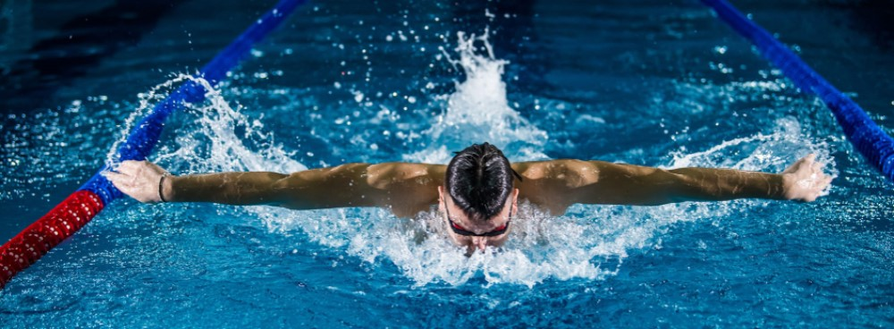

Klub Pływacki "AQUA" jest to ambitna grupa sportowa mająca na celu nauczyć i rozwijać umiejętności pływania
dla różnych grup wiekowych. Jesteśmy wstanie zapewnić wam najlępszą możliwą naukę pływania bez względu na preferowany styl.
Nasze drużyny startują również w dużej ilości konkursów i mamy na swoim koncie pare osiągnięć, które są rozpisane na podstronie,
która jest dostępna na samym końcu strony głównej.
Jakie wartości reprezentujemy?
Łączenie wielkiej pasji z ogromną wiedzą i wieloletnim doświadczeniem
Efektywne szkolenia pływackie wykorzystując nowoczesne metody nauczania i ćwiczenia oparte na grach i zabawach
Indywidualne podejście do każdego uczestnika szkolenia pływackiego
Profesjonalizm, zaangażowanie ,świetną atmosferę i zarażanie sportową pasją podczas zajęć jednocześnie kładąc nacisk na bezpieczeństwo, efektywność zajęć z wykorzystaniem nowoczesnego sprzętu pływackiego, zabawę i postępy w szkoleniu pływackim

Dlaczego warto do nas dołączyć?
W naszym klubie największy nacisk kładziony jest na wyjątkową atmosferę podczas zajęć. Staramy się, aby było radośnie, przyjemnie i zabawnie.
Jednocześnie dbamy o to, aby każde zajęcia były intensywne, interesujące i ciekawie urozmaicone, tak aby każdy z zainteresowaniem w nich uczestniczył.
Nauka pływania dla dzieci to świetna zabawa, a dla dorosłych zastrzyk pozytywnej energii. Zapraszamy zarówno wszystkie
dzieci jak i dorosłych, którzy chcą rozwijać swój sportowy potencjał i powalczyć w zawodach pływackich.
Jak do nas dołączyć?
Banalnie prosto! Wypełnij formularz, który jest podany poniżej! Wrazie pytań proszę o kontakt telefoniczny lub mialowy. Formularz
Telefon: +48 198 495 109
E-mail: PływalniaAquaBełchatów@wp.pl